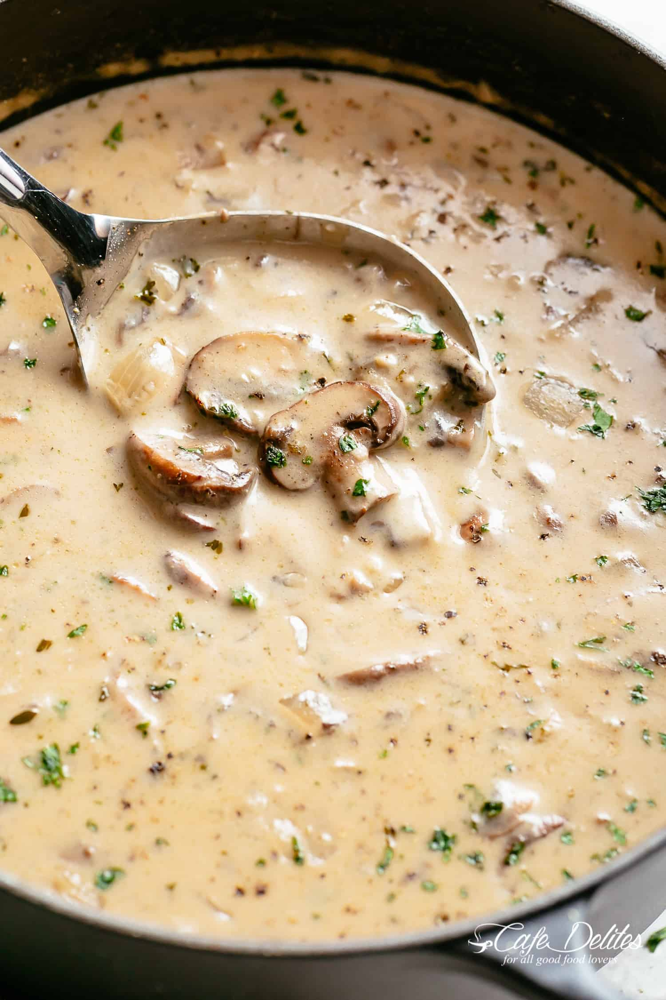

Cream Mushroom Soup

Ingredients
- 4 tablespoons butter
- 1 tablespoon oil
- 2 onions, diced
- 4 cloves garlic, minced
- 1 ½ pounds brown mushrooms, fresh, sliced
- 4 teaspoons chopped thyme, divided
- ½ cup Marsala wine (or any dry red or white wine)
- 6 tablespoons all-purpose flour
- 4 cups low sodium chicken broth or stock
- 1-2 teaspoons salt (adjust to taste)
- ½-1 teaspoon black pepper, cracked (adjust to taste)
- 2 beef bouillon cubes, crumbled
- 1 cup heavy cream or half and half (sub with evaporated milk)
- ½ tablespoon parsley, chopped (fresh, for serving)
- ½ tablespoon thyme, chopped (fresh, for serving)
Description
- Heat butter and oil in a large pot over medium-high heat until melted. Sauté onion for 2 to 3 minutes until softened. Cook garlic until fragrant, about 1 minute.
- Add mushrooms and 2 teaspoons thyme, cook for 5 minutes. Pour in wine and allow to cook for 3 minutes.
- Sprinkle mushrooms with flour, mix well, and cook for 2 minutes. Add stock, mix again, and bring to a boil. Reduce heat to low-medium, season with salt, pepper, and crumbled bouillon cubes.
- Cover and allow to simmer for 10-15 minutes, stirring occasionally, until thickened.
- Reduce heat to low, stir in cream or half and half. Allow to gently simmer (do not boil). Adjust salt and pepper to your taste.
- Mix in parsley and remaining thyme. Serve warm.
Home